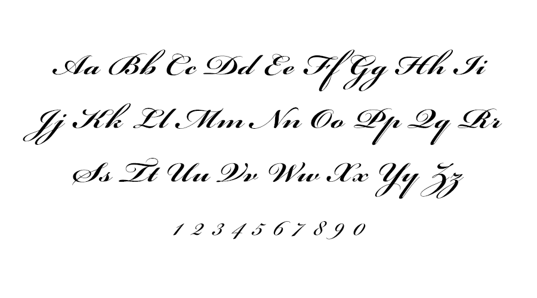
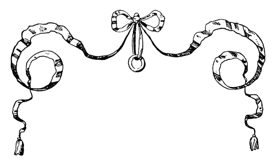

Bickham Script is een sierlijk en script-lettertype, ontworpen door Richard Lipton en uitgebracht door Adobe in 1997. Het lettertype is geïnspireerd op de 18e-eeuwse handschriften (Engelse ronde hand) en kalligrafische stijlen, die destijds zeer populair waren voor formele documenten, brieven en uitnodigingen.
De oorsprong: George Bickham
Bickham Script is gebaseerd op de kalligrafische stijlen van George Bickham, een beroemde Britse graveur en schrijfmeester uit de 18e eeuw. Hij was bekend om zijn verzameling van kalligrafische voorbeelden, gepubliceerd in zijn beroemde werk "The Universal Penman" (1743). Dit boek, waarin voorbeelden van de beste kalligrafen van die tijd werden samengebracht, werd de standaard voor kalligrafie en handschriftstijl in Europa en Noord-Amerika.
Kenmerken van Bickham Script
Sierlijkheid en Detail: Bickham Script bevat verfijnde en gecompliceerde krullen en versieringen, typerend voor de kalligrafische stijlen van de 18e eeuw. Het lettertype heeft sterke contrasten tussen dunne en dikke lijnen, wat zorgt voor een dynamische uitstraling.
Historische Relevantie: De stijl van George Bickham en zijn tijdgenoten werd geassocieerd met verfijning, rijkdom en formele situaties. Het was de voorkeursstijl voor het maken van officiële documenten, zoals diploma’s, certificaten en uitnodigingen voor belangrijke gebeurtenissen.
Toepassing: Bickham Script wordt nog steeds veel gebruikt voor formele en ceremoniële doeleinden, zoals bruiloften, certificaten, luxe branding, en uitnodigingen. Vanwege de sierlijke lijnen en hoge esthetische waarde wordt het vooral geassocieerd met elegantie en traditie.
Ontwerp van Richard Lipton
Richard Lipton ontwierp Bickham Script voor Adobe, gebaseerd op de stijlen in Bickham’s werk, maar met moderne digitale mogelijkheden in gedachten. Lipton gebruikte digitale technologie om het lettertype flexibel te maken, inclusief open-type functies zoals geavanceerde ligaturen en alternatieve vormen, waardoor het lettertype zich aanpast aan verschillende contexten en schriftdoeleinden.
 Rhania Lachman